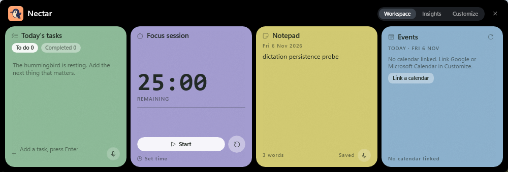
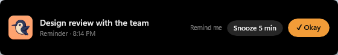
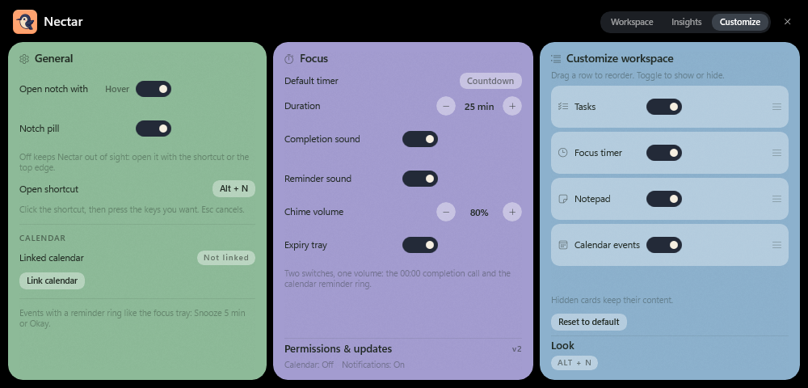
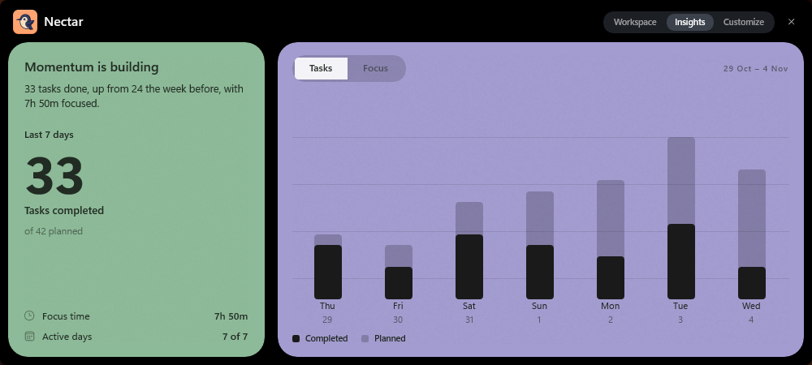

Tasks
Type a line, press Enter. The ring on the left completes it, completed rows sink to the bottom, and every check-off feeds the weekly chart.
- One-line capture
- Strikethrough + re-sort
- Cleared tasks keep their date
Windows 10 & 11 · WinUI 3 · v2
Nectar hangs off the top edge of your screen. Pull it down and your tasks, a focus timer, a scratchpad and today's calendar are already open — no window to hunt for, nothing that steals focus from the app you are working in.
that is the whole gesture — Alt + N anywhere, or hover the top edge.

Tasks Focus Notepad Events
The workspace
They arrive in one 1000 px strip that never covers the app underneath. Hide the ones you do not use, drag them into your own order.
Type a line, press Enter. The ring on the left completes it, completed rows sink to the bottom, and every check-off feeds the weekly chart.
A 25-minute countdown that derives its time from a deadline, not from ticks — a busy machine cannot make it drift. Sleeping the PC pauses it.
A scratch page with no title, no file and no save button. It writes itself 700 ms after you stop typing.
Today's calendar, one row per event, each with a bell. Link Google or Microsoft — one at a time, from your own OAuth client.
Getting in
The overlay is deliberately non-activating: clicking a card never moves your keyboard focus out of the editor you are in. Only a text field asks for it, and only when you click.
Click the chord in Customize and press a new one. If Windows already owns it, Nectar keeps the old one and tells you why. Esc cancels.
A 240 × 6 px strip at the top of the work area opens the workspace as the pointer crosses it. There is a switch for that too.
Folded away, Nectar is a small black pill with the name and the countdown. Hide the pill and it disappears completely — the shortcut and the top edge still open it.
Calendar & reminders
Link Google Calendar or Microsoft Calendar through OAuth with PKCE. Tokens are encrypted with DPAPI for your Windows user and never leave the machine; only the public client ID and tenant are written to settings.
Ring the bell on an event — at the start, 5 or 10 minutes before. When it comes due, the same tray that ends a focus session drops down: the hummingbird, the event, the time, and two buttons.

Customize
General holds the shortcut, the hover band, the pill switch and the calendar. Focus holds the session length, the completion sound, the chime volume and the expiry tray. Workspace holds card order and visibility.
Reset restores the layout and the focus defaults — your shortcut, your hover setting and your calendar link stay exactly where they were.

settings.json.Insights
The week you just had, beside the week before it: tasks completed or minutes focused, whichever you are in the mood to face. Every bar is drawn natively from the same SQLite file the cards write to — no charting library, no cloud round trip.
If nothing has been logged yet, it says so instead of drawing an empty chart.

Where your data lives
0
No sign-up, no profile, no sync service. The calendar uses your own OAuth client, not ours.
1
%LOCALAPPDATA%\Nectar\nectar.db holds the tasks, the note and every focus session.
DPAPI
Calendar credentials are sealed to your Windows user, so another account on the machine cannot read them.
No telemetry, no analytics, no Electron runtime — a WinUI 3 app with a Win32 overlay layer.
Install
Nectar ships unpackaged: one executable folder, the Windows App SDK alongside it, nothing to install system-wide. You need Windows 10 (19041) or later and the .NET 8 SDK.
Nectar.exe. It starts hidden — press Alt + N.# clone and build
git clone https://github.com/your-username/nectar
cd nectar/Nectar
dotnet build Nectar.csproj -c Release
# run it (starts hidden)
.\bin\Release\net8.0-windows10.0.19041.0\win-x64\Nectar.exeNo MSIX, no admin prompt, no background service. Windows App SDK is copied next to the executable, so the machine does not need the runtime pre-installed.